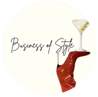
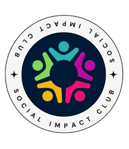
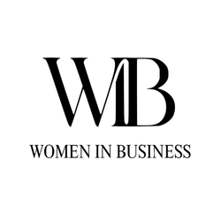

Hult Sustainability Society presents
The Sustainability Conference ’26
Closingthe Loop.
A day of ideas and conversations on what a more circular future asks of us.
01 / The idea
Progress is a
collective act.
Closing the Loop brings together perspectives from fashion, global affairs, consumer goods and technology to explore sustainability through the decisions we make every day.
Hear from the people working across these fields, meet fellow attendees and take part in a programme built for conversation.
Discover the day02 / The programme
A day to see
the whole picture.
Saturday 21 November
Hult UG Campus, London
Fashion
John Atcheson
Sustainability Panel
Natasha Turner, Amanda Brasil-Leigh & Dr. Stephanie Daher
Global Affairs
Nicole Jacobo
Consumer Goods
Lemonaid
Closing
Programme details may change. Times shown are local to London.
03 / Breakfast & lunch
A little play
between ideas.
Three short experiences to pick up over breakfast or lunch. Find a word, connect the themes, then close the loop with a toss.
Three short games to play during the break
04 / Together with
The clubs behind HSCON
Seven communities bringing different perspectives to the room.

Business of Style
Social Impact Club
Women in BusinessKeep exploring